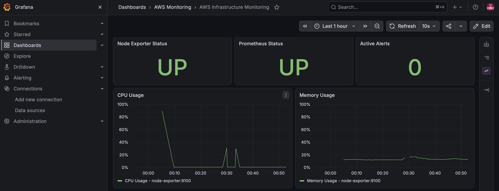
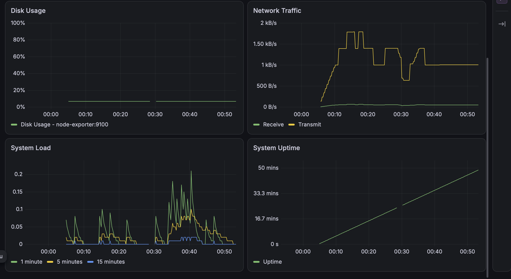

AWS Infrastructure
Monitoring Platform
A production-style monitoring stack built with Prometheus, Grafana, Alertmanager, Node Exporter, Docker, Terraform and GitHub Actions.
About the Project
This project demonstrates an infrastructure monitoring platform designed to collect system metrics, visualize infrastructure health, evaluate alert conditions and validate monitoring configuration through CI/CD.
The current implementation runs locally using Docker Compose. Terraform configuration for AWS infrastructure is included and validated, while actual AWS deployment is intentionally excluded from the current version.
Architecture
Node Exporter
Collects CPU, memory, disk, network, load and uptime metrics.
Prometheus
Scrapes metrics, evaluates recording rules and evaluates alerts.
Alertmanager
Receives Prometheus alerts and routes them according to severity.
Grafana
Provides dashboards for infrastructure health and performance.
Monitoring Features
CPU Monitoring
Tracks CPU utilization and detects sustained high CPU usage.
Memory Monitoring
Monitors memory utilization and identifies high memory usage.
Disk Monitoring
Tracks filesystem utilization and detects high disk usage.
Network Monitoring
Tracks network receive and transmit traffic.
Alerting
Prometheus alerts are routed through Alertmanager based on severity.
CI Validation
GitHub Actions validates configuration, rules, scripts, JSON and Terraform.
Technology Stack
Monitoring Dashboard
Grafana provides a centralized view of infrastructure health and performance using metrics collected by Prometheus and Node Exporter.

Infrastructure Metrics

Project Status
Explore the Project
View the complete source code, monitoring configuration, Terraform files and CI/CD workflow on GitHub.
Open GitHub Repository